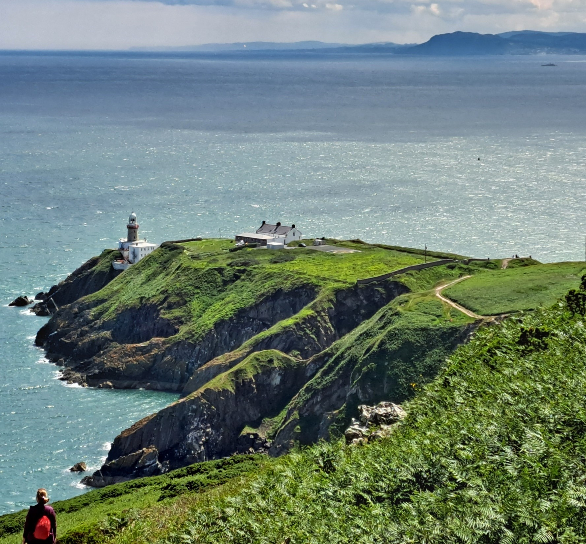

IRELAND
Emerald Isle
Emerald Isle
Ireland is also called the 'Emerald Isle' or 'Green Country' because of its vast expanses of grassland and pastureland, which occupy more than 2/3 of the territory.
Ireland is also called the 'Emerald Isle' or 'Green Country' because of its vast expanses of grassland and pastureland, which occupy more than 2/3 of the territory.